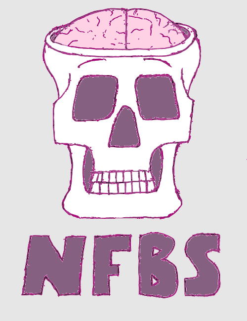
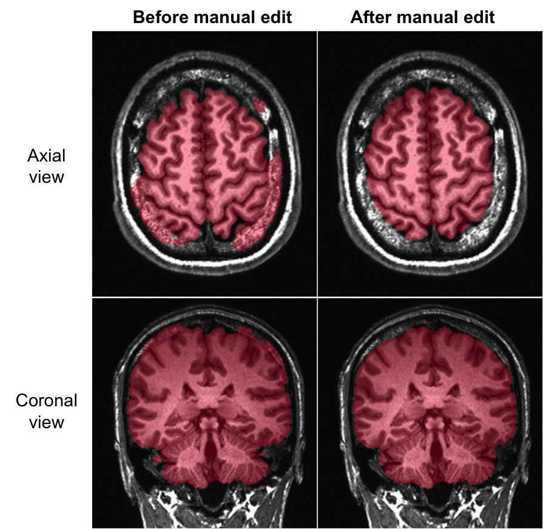

<!DOCTYPE html>
<html>

    <head>
        <meta charset='utf-8' />
        <meta http-equiv="X-UA-Compatible" content="chrome=1" />
        <meta name="description" content="Preprocessed Connectomes Project" />
        <link rel="stylesheet" href="stylesheets/bib-publication-list.css"/>
        <link rel="stylesheet" type="text/css" media="screen" href="stylesheets/stylesheet.css">
	    <script src="http://code.jquery.com/jquery-latest.min.js" type="text/javascript"></script>
        <script src="javascripts/menu_script.js"></script>
        <title>NFBS Skull-Stripped Repository</title>
    </head>

    <body>

        <div id="container">

        <!-- HEADER -->
            <header>
                <!--<a id="forkme_banner" href="https://github.com/ccraddock/abide_preproc">View on GitHub</a>-->

                <h1 id="project_title">NFBS Skull-Stripped Repository</h1><br>
  		        <div id='cssmenu'>
  		            <ul>
  		                <li><a href='index.html'>Overview</a></li>
                        <li class='active'><a href='publications.html'>Publications</a></li>
                        <li class='active'><a href='https://preprocessed-connectomes-project.github.io' target="_blank">PCP</a></li>
  		                <li class='active'><a href='https://github.com/preprocessed-connectomes-project/NFB_skullstripped' target="_blank">View on Github</a></li>

  		            </ul>
  		        </div>
            </header>

                <div id="main_content_wrap" class="outer">
                    <section id="main_content" class="inner">
                        <p></p>

<p><strong>The Neurofeedback Skull-stripped (NFBS) repository</strong> is a database of 125 T1-weighted anatomical MRI scans that are manually skull-stripped. NFBS provides researchers with gold standard training and testing data for developing machine learning algorithms. The data was collected as a part of the <a href="http://fcon_1000.projects.nitrc.org/indi/enhanced/">Enhanced Rockland Sample</a> Neurofeedback Study. NFBS is available for download on the <a href="https://github.com/preprocessed-connectomes-project/NFB_skullstripped">NFB_skullstripped Github page</a>.</p>

<p>For more information, please see:</p>

<p>Puccio et al. The Preprocessed Connectomes Project: repository of manually-corrected skull-stripped T1-weighted anatomical MRI data. (2016).</p>

<p><strong><em>Table of Contents</em></strong></p>

<ul>
  <li><a href="#abstract">Abstract</a></li>
  <li><a href="#contents-of-the-repository">Contents of the Repository</a></li>
  <li><a href="#methods">Methods</a></li>
  <li><a href="#data-analysis">Data Analysis</a></li>
  <li><a href="#downloading-the-repository">Downloading the Repository</a></li>
  <li><a href="##contributors">Contributors</a></li>
  <li><a href="##references">References</a></li>
</ul>

<h2 id="abstract">Abstract</h2>
<p>Skull-stripping, also known as brain extraction, is the procedure of removing non-brain tissue from anatomical MRI data. This procedure is necessary for calculating brain volume and for improving the quality of brain image registration and segmentation. Developing new brain extraction algorithms and evaluating their performance requires gold standard} data from a variety of different scanners and acquisition methods. We complement existing repositories with manually-corrected brain extractions for 125 T1-weighted anatomical scans from the Enhanced Rockland Sample Neurofeedback Study.</p>

<p>Skull-stripped images were obtained using an iterative two-step procedure. In the first step, the BEaST algorithm was used to automatically obtain brain masks. Following visual inspection, the BEaST-derived masks were manually edited<sup id="fnref:1"><a href="#fn:1" class="footnote">1</a></sup>. In total, 85 of the skull-strips were hand-edited and 40 were deemed to not need editing. The resulting repository was used to compare the outputs from the BET<sup id="fnref:2"><a href="#fn:2" class="footnote">2</a></sup>, 3dSkullStrip<sup id="fnref:3"><a href="#fn:3" class="footnote">3</a></sup>, and FreeSurfer HWA<sup id="fnref:4"><a href="#fn:4" class="footnote">4</a></sup> algorithms (BEaST was not compared to avoid bias). Two outside repositories, IBSR<sup id="fnref:5"><a href="#fn:5" class="footnote">5</a></sup> and LPBA40<sup id="fnref:6"><a href="#fn:6" class="footnote">6</a></sup>, were also tested with these algorithms, as well as with BEaST using our repository in its prior library.</p>

<h2 id="contents-of-the-repository">Contents of the Repository</h2>

<p>The repository contains data from 125 participants, ranging from 21 to 45 years old. For each participant, the repository contains:</p>

<ul>
  <li>Structural T1-weighted anonymized (de-faced) image</li>
  <li>Skull-stripped image</li>
  <li>Brain mask</li>
</ul>

<p>The structural MRI data was collected as a part of the Neurofeedback study in the Enhanced Nathan Kline Institute - Rockland Sample. The resolution of the images is 1mm<sup>3</sup> and each file is in NiFTI format (.nii.gz).</p>

<h2 id="methods">Methods</h2>

<p>The BEaST method<sup id="fnref:1:1"><a href="#fn:1" class="footnote">1</a></sup> (brain extraction based on nonlocal segentation technique) was used to initially skull-strip the 125 anatomical T1-weighted images. This software uses a patch-based label fusion method that labels each voxel in the brain boundary volume by comparing it to similar locations in a library of segmented priors. The segmentation technique also incorporates a multi-resolution framework in order to reduce computational time. The version of BEaST used was 1.15.00 and our implementation was based off of a shell script written by Qingyang Li<sup id="fnref:7"><a href="#fn:7" class="footnote">7</a></sup>. Visual inspection of these initial skull-stripped images indicated whether additional edits were necessary.</p>

<p></p>

<p>Manual edits were performed using the Freeview visualization tool from the FreeSurfer software package<sup id="fnref:8"><a href="#fn:8" class="footnote">8</a></sup>. The standard for the NFBS was adapted from Esklidsen et al (2012). All exterior non-brain tissue was removed from the head image, specifically the skull, scalp, fat, muscle, dura mater, and external blood vessels and nerves. Time spent editing each mask ranged from 1–8 hours, depending on the quality of the anatomical image and the BEaST mask. Afterwards, manually edited masks were used to populate the prior library of BEaST in order to skull-strip same dataset. This iterative bootstrapping technique was repeated until approximately 85 of the datasets were manually edited and all skull-strips were considered to be fitting the standard.</p>

<h2 id="data-analysis">Data Analysis</h2>

<p>After the masks were all judged as fitting the brain mask definition, they were used as gold standard data and compared to other datasets by testing various skull-stripping algorithms, specifically BET<sup id="fnref:2:1"><a href="#fn:2" class="footnote">2</a></sup>, 3dSkullStrip<sup id="fnref:3:1"><a href="#fn:3" class="footnote">3</a></sup>, FreeSurfer Hybrid Watershed Algorithm<sup id="fnref:5:1"><a href="#fn:5" class="footnote">5</a></sup> (HWA). BET was used with the bias field and neck setting (-B) since our anatomical images contained the subjects’ necks.</p>

<p></p>

<p>Two datasets were used as a comparison, the Internet Brain Segmentation Repository<sup id="fnref:5:2"><a href="#fn:5" class="footnote">5</a></sup> (IBSR) and the LONI Probabilistic Brain Atlas<sup id="fnref:6:1"><a href="#fn:6" class="footnote">6</a></sup> (LPBA40).</p>

<p></p>

<h2 id="downloading-the-repository">Downloading the Repository</h2>

<p>Please go to <a href="http://www.github.com/preprocessed-connectomes-project/NFB_skullstripped">our github page</a> for download. The total amount of free hard disk space required is 1.9 GB.</p>

<p>The images are available in NiFTI format (.nii.gz).</p>

<h2 id="contributors">Contributors</h2>

<p>Benjamin Puccio</p>

<p>Cameron Craddock</p>

<p>Carol Froehlich</p>

<p>Steven Giavasis</p>

<p>Amalia McDonald</p>

<p>John Pellman</p>

<p>James Pooley</p>

<p>Elise Taverna</p>

<h2 id="references">References</h2>

<div class="footnotes">
  <ol>
    <li id="fn:1">
      <p>Eskildsen, S.F., Coupe, P., Fonov, V., Manjon, J.V., Leung, K.K., Guizard, N., Wassef, S.N., stergaard, L.R., Collins, D.L.: BEaST: Brain extraction based on nonlocal segmentation technique. NeuroImage 59( 3), 2362{2373 (2012).doi:10.1016/j.neuroimage.2011.09.0125. <a href="#fnref:1" class="reversefootnote">&#8617;</a> <a href="#fnref:1:1" class="reversefootnote">&#8617;<sup>2</sup></a></p>
    </li>
    <li id="fn:2">
      <p>Smith, S.M.: Fast robust automated brain extraction. Human BrainMapping17( 3), 143{155 (2002). doi:10.1002/hbm.100629. <a href="#fnref:2" class="reversefootnote">&#8617;</a> <a href="#fnref:2:1" class="reversefootnote">&#8617;<sup>2</sup></a></p>
    </li>
    <li id="fn:3">
      <p>Cox, R.W.: Afni: software for analysis and visualization of functional magnetic resonance neuroimages. Computers and Biomedical research 29(3), 162{173 (1996)7. <a href="#fnref:3" class="reversefootnote">&#8617;</a> <a href="#fnref:3:1" class="reversefootnote">&#8617;<sup>2</sup></a></p>
    </li>
    <li id="fn:4">
      <p>Segonne, F., Dale, A.M., Busa, E., Glessner, M., Salat, D., Hahn,H.K., Fischl, B.: A hybrid approach to the skull stripping problem in MRI. NeuroImage 22(3), 1060{1075 (2004).doi:10.1016/j.neuroimage.2004.03.03210. <a href="#fnref:4" class="reversefootnote">&#8617;</a></p>
    </li>
    <li id="fn:5">
      <p>Rohlfing, T.: Image similarity and tissue overlaps as surrogates for image registration accuracy: widely used but unreliable. IEEE transactions on medical imaging 31(2), 153{163 (2012)12. <a href="#fnref:5" class="reversefootnote">&#8617;</a> <a href="#fnref:5:1" class="reversefootnote">&#8617;<sup>2</sup></a> <a href="#fnref:5:2" class="reversefootnote">&#8617;<sup>3</sup></a></p>
    </li>
    <li id="fn:6">
      <p>Shattuck, D.W., Mirza, M., Adisetiyo, V., Hojatkashani, C., Salamon,G., Narr, K.L., Poldrack, R.A., Bilder, R.M., Toga, A.W.: Construction of a 3d probabilistic atlas of human cortical structures. Neuroimage 39(3), 1064{1080 (2008) <a href="#fnref:6" class="reversefootnote">&#8617;</a> <a href="#fnref:6:1" class="reversefootnote">&#8617;<sup>2</sup></a></p>
    </li>
    <li id="fn:7">
      <p>A Brief Introduction to BEaST. https://surfer.nmr.mgh.harvard.edu/ <a href="#fnref:7" class="reversefootnote">&#8617;</a></p>
    </li>
    <li id="fn:8">
      <p>FreeSurfer Software Suite. <a href="#fnref:8" class="reversefootnote">&#8617;</a></p>
    </li>
  </ol>
</div>

                    </section>
                </div>

            <!-- FOOTER  -->
            <footer class="inner">
                <p>Published with <a href="http://pages.github.com">GitHub Pages</a></p>
            </footer>

        </div>
    </body>
</html>
